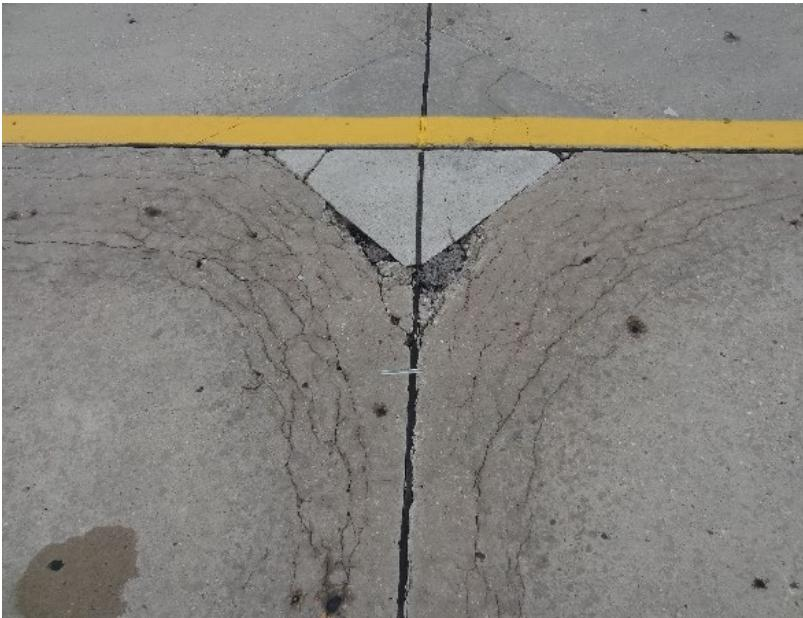
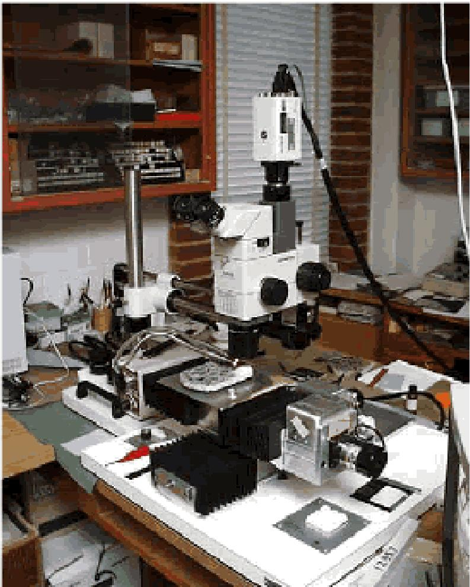
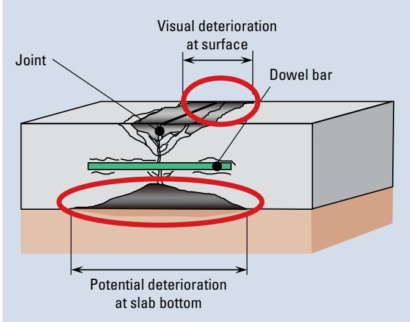

Freeze-Thaw Damage to Concrete Pavement Joints
Freeze‑thaw damage to concrete pavement joints is a material‑related distress that manifests as durability (D) cracking, spalling, scaling or other surface loss concentrated at joint faces and the underside of slabs where moisture saturation is greatest [1][2]. The mechanism originates from water infiltrating the joint, saturating freeze‑sensitive coarse aggregates that expand or fracture during repeated freezing–thawing cycles, producing characteristic hourglass‑shaped cracks at transverse joints and existing cracks; deicing chemicals can form calcium oxychloride, further accelerating cracking, spalling and scaling [1][2]. The severity of this damage is amplified when the concrete lacks adequate air‑void content, joint detailing is improper, or construction practices are substandard, reducing the pavement’s ability to accommodate ice expansion and thereby shortening its service life [1][2].
CP Tech Center Guides reports covering “Freeze-Thaw Damage to Concrete Pavement Joints” also include the following subtopics: Frost-Thaw Damage to Concrete Joints.
Frost-Thaw Damage to Concrete Joints serves as a specific manifestation of this distress by detailing the premature deterioration mechanisms, such as pumping and faulting, that occur when joints reach saturation levels with low air-entrainment. [1][4]
Sources (5)
Sub-concepts (1)
Purpose and treatment objectives
The treatment is intended to address joint deterioration that manifests as durability (D‑) cracking, spalling, scaling, or other surface loss at concrete pavement joints. The distress originates from water trapped in the joint repeatedly freezing and thawing, which causes critically saturated, freeze‑sensitive coarse aggregates to fracture or expand, producing hourglass‑shaped cracks primarily at transverse joints and on the slab underside. In addition, the use of certain deicing chemicals can generate calcium oxychloride, further promoting cracking, spalling, and scaling. The problem is intensified when the concrete lacks sufficient air void content, has improper joint detailing, or suffers from poor construction practices. [1][2]
The following figure illustrates common joint spalling and cracking resulting from these freeze-thaw mechanisms.
 Severe longitudinal joint spalling on a concrete pavement surface. [1]
Severe longitudinal joint spalling on a concrete pavement surface. [1]
The image displays a close-up view of a concrete road surface featuring a prominent longitudinal crack or joint running vertically through the frame. The edges along this linear feature exhibit significant deterioration, characterized by loose debris and irregular chipping consistent with spalling. This visual evidence of joint deterioration aligns with the description of transverse and longitudinal joint/crack spalling as a predominant concrete pavement distress involving cracking, chipping, or fraying of slab edges.
[1] — Ch. 4 (pp. 78–80); [2] — Ch. 3 (pp. 71–72)
The objective in dealing with freeze‑thaw damage to concrete pavement joints is to prevent further deterioration by identifying the distress early and applying mitigation or preventive measures; the damage results from saturated freezing‑thaw cycles combined with calcium oxychloride formation from certain deicers, and it can be aggravated by inadequate air content, improper joint detailing, and poor construction practices. Preventing deterioration helps preserve pavement performance and extend its service life. [2]
[2] — Ch. 3 (pp. 71–72)
Distress characterization and causes
Durability (D‑) cracking caused by freeze–thaw cycling appears primarily at transverse joints and existing cracks, forming an hourglass‑shaped pattern rather than spreading across the whole slab; the deterioration also develops on the underside of the slab where saturation is highest, making it potentially more severe in that location. The distress is limited to these joint and crack zones, with severity increasing beneath the surface, but the source does not quantify a progression rate or describe specific safety or operational consequences. [1]
[1] — Ch. 4 (pp. 78–80)
The guides explain that freeze‑thaw damage to concrete pavement joints is driven primarily by water infiltration that saturates susceptible coarse aggregates; when these saturated particles freeze they expand or fracture, forcing the surrounding mortar to crack. Durability cracking, commonly referred to as D‑cracking, is a distress associated with the freezing and thawing of critically saturated, susceptible coarse aggregate particles in the concrete. The distress typically forms in an hourglass shape at transverse joints and cracks and not over the entire slab; furthermore, the deterioration also occurs on the underside portion of the slab where saturation is higher. Joint deterioration is also described as “the result of a combination of saturated freezing and thawing along with calcium oxychloride formation as a result of using certain deicer chemicals.” This damage can be exacerbated by inadequate air, improper joint detailing, and poor construction practices. [1][2]
The following figure illustrates how poor joint sealants and trapped moisture lead to saturation and subsequent micro-cracking in concrete joints.
 Concrete core showing longitudinal freeze-thaw damage and spalling at a joint interface. [1]
Concrete core showing longitudinal freeze-thaw damage and spalling at a joint interface. [1]
The image displays a cylindrical concrete core sample with significant surface deterioration, including a large void where the mortar matrix has spalled away to expose coarse aggregate particles. A red line marks the top of the specimen, and a vertical crack runs down from this surface into the core, indicating longitudinal freeze damage originating at the joint face.
[1] — Ch. 4 (pp. 78–80); [2] — Ch. 3 (pp. 71–72)
Applicability and treatment selection
Freeze‑thaw damage to concrete pavement joints is appropriate for treatment on concrete pavements that contain coarse aggregates susceptible to freeze‑thaw distress and become critically saturated with water, especially where the pavement lacks adequate air‑void content or has substandard joint detailing and construction. The condition is driven primarily by environmental exposure to repeated saturation and cyclic freezing–thawing, such as in Midwestern climates, and can be intensified by deicing chemicals that promote calcium oxychloride formation. Traffic loading is not emphasized as a primary trigger; the guides focus on material and environmental factors. Site‑specific concerns include high moisture levels beneath the slab, inadequate air content, and poor joint construction, which together increase the risk of spalling, scaling, and hourglass‑shaped cracking at transverse joints. [1][2]
[1] — Ch. 4 (pp. 78–80); [2] — Ch. 3 (pp. 71–72)
Condition assessment and timing
The assessment begins with a field visual inspection that looks for the material‑related distress (MRD) typical of freeze‑thaw damage: cracking, scaling or spalling at joint faces, staining, and especially the hourglass‑shaped cracks that develop at transverse joints and on the slab underside where saturation is greatest. Inspectors also examine the bottom of joints, which may be hidden from view. As the guides note, ‘visual inspection alone cannot confirm the presence or absence of material-related issues. Laboratory testing of pavement core samples is required to definitively confirm the mechanisms that are contributing to the distress.’
Where such signs are observed, cores are extracted from the suspect joint area for laboratory analysis. The recommended suite of tests includes: - An indirect tensile strength test (ASTM C496) – ‘The indirect tension test … can be used to determine the tensile strength of concrete cores or any stabilized pavement layer.’ - Microscopy of the air‑void system according to ASTM C457 – ‘ASTM C457, Standard Test Method for Microscopical Determination of Parameters of the Air-Void System in Hardened Concrete, can be used to quantify air void size and spacing.’ - Optical microscopy (stereo or petrographic) – ‘Optical microscopy using the stereo microscope and the petrographic microscope are recognized as the most versatile and widely applied tools for diagnosing causes of MRD.’ - Targeted staining tests – ‘Staining tests are effective at identifying certain types of MRD.’ - Scanning electron microscopy with energy‑dispersive spectroscopy to identify reaction products. - Chemical analyses, including chloride content, water‑to‑cement ratio, and testing for deicer‑induced calcium oxychloride formation – the guides report that joint deterioration can result from a combination of saturated freezing/thawing and calcium oxychloride formation caused by certain deicers.
The combination of visual signs—‘MRD is generally visible as cracking or a degradation of the concrete, such as scaling or spalling, often accompanied by some type of staining or exudate.’—with reduced indirect tensile strength, insufficient air voids, or the presence of deleterious chemicals indicates that remedial treatment of the joint is required. [1][2][3]
The following figure illustrates examples of material-related cracks associated with this damage.
 Severe durability cracking on a concrete pavement surface. [1]
Severe durability cracking on a concrete pavement surface. [1]
The image displays a concrete pavement surface characterized by an extensive network of interconnected, closely spaced cracks known as map cracking or crazing. This pattern is consistent with material-related distress (MRD), which manifests as durability cracking due to the properties of the materials and their interaction with the environment.
[1] — Ch. 4 (pp. 78–80); [2] — Ch. 3 (pp. 71–72); [3] — Ch. 3 (p. 69)
Freeze‑thaw damage to concrete pavement joints should be addressed when durability (D‑) cracking becomes evident—specifically, when hourglass‑shaped cracks appear at transverse joints or existing cracks and the underside of the slab shows more severe deterioration due to critical saturation of susceptible aggregates. At that point the distress has progressed beyond mere surface signs and indicates active freeze‑thaw induced damage requiring remedial action. [1]
The following figure illustrates how this distress typically manifests as crescent-shaped cracks accompanied by dark staining from calcium hydroxide or carbonate residues.

Staining accompanying D-cracking at joints [1]The image displays a concrete pavement surface featuring a transverse joint marked by a yellow line.
[1] — Ch. 4 (pp. 78–80)
Materials and repair details
Freeze‑thaw damage to concrete pavement joints is governed primarily by the properties of the concrete mix and the conditions to which it is exposed. The guides agree that “Durability cracking, commonly referred to as D-cracking, is a distress associated with the freezing and thawing of critically saturated, susceptible coarse aggregate particles in the concrete,” and that “Susceptible aggregates fracture and/or dilate as they freeze, resulting in cracking of the surrounding mortar.” High internal moisture amplifies this mechanism; the distress often appears at transverse joints and can be more severe beneath the slab where saturation is greatest: “The distress typically forms … at transverse joints and cracks and not over the entire slab; furthermore, the deterioration also occurs on the underneath portion of the slab and can actually be more severe at that location because of higher levels of saturation.”
Material composition also controls resistance. All sources note that the aggregate type, cement content, and admixture proportions are fundamental: “The occurrence of MRD is a function of many factors, including the constituent materials (aggregate, cement, admixtures) and their proportions, the pavement’s location (maritime or inland), the climatic conditions (temperature, moisture) to which it is subjected, and the presence of external aggressive agents (e.g., roadway deicing chemicals).” Adequate air entrainment is essential to accommodate ice expansion; insufficient air “can be exacerbated by inadequate air, improper joint detailing, and poor construction practices.” Compatibility with deicing chemicals is another critical requirement. The guides highlight that freeze‑thaw deterioration can involve chemical reactions: “This deterioration is the result of a combination of saturated freezing and thawing along with calcium oxychloride formation as a result of using certain deicer chemicals.”
Existing pavement conditions further affect performance. Climate and location dictate temperature swings and moisture regimes, influencing saturation levels, while exposure to aggressive agents such as roadway salts accelerates spalling and cracking. Improper joint detailing and prior material‑related distresses reduce resistance, making proper design and construction vital for long‑term durability.
When these material‑related distresses are suspected, laboratory diagnostics—including optical microscopy, scanning electron microscopy and chemical analyses—are recommended to identify the underlying microstructural changes and guide preventive or remedial actions: “When MRD is suspected of playing a role in the premature deterioration of concrete, laboratory tests are essential to help understand the underlying mechanisms at work.” [1][2][3]
[1] — Ch. 4 (pp. 78–80); [2] — Ch. 3 (pp. 71–72); [3] — Ch. 3 (p. 69)
Quality and workmanship
The inspection protocol begins by confirming that the constituent materials—aggregate type, cement and any admixtures—are appropriate for freeze‑thaw environments and that the mix design provides adequate air entrainment to accommodate freezing water. The w/c ratio and chloride content should be determined through analytical chemistry to gauge susceptibility to moisture‑induced distress. “Analytical chemistry is an effective method of determining some of the key parameters of the concrete (e.g. water-to-cement ratio [w/c], chloride content).” Core samples taken from transverse and longitudinal joints are examined for saturation condition and tested for indirect tensile strength (splitting tension) in accordance with ASTM C496, while the air‑void system is quantified using ASTM C457 to ensure proper void size and spacing. “Laboratory testing of pavement core samples is required to definitively confirm the mechanisms that are contributing to the distress.” Joint detailing and construction practices are reviewed for correct sealant placement, appropriate joint geometry, and avoidance of low‑air mixes that can lead to saturated freezing. “It can be exacerbated by inadequate air, improper joint detailing, and poor construction practices.” Microscopic examination (optical or SEM) of concrete cores is employed when visual signs such as spalling or scaling appear, to reveal underlying material‑related deterioration. “Durability cracking, commonly referred to as D-cracking, is a distress associated with the freezing and thawing of critically saturated, susceptible coarse aggregate particles in the concrete”. [1][2][3]
The figure below illustrates the air void testing apparatus used to quantify the air-void system in concrete cores.

Laboratory setup for Hardened Air Petrographic Analysis of concrete specimens. [1]The image displays a complex optical microscope apparatus mounted on a laboratory bench, featuring a camera attachment and various control modules. This equipment is used for the “Microscopial Determination of Parameters of the Air Void System in Hardened Concrete” to evaluate freeze-thaw damage potential.
[1] — Ch. 4 (pp. 78–80); [2] — Ch. 3 (pp. 71–72); [3] — Ch. 3 (p. 69)
Performance and service life
The guides describe freeze‑thaw damage in concrete pavement joints as a progressive loss of condition that manifests through durability cracking, spalling and loss of joint cohesion. Freeze‑thaw damage appears as durability (D) cracking when saturated, freeze‑sensitive aggregates expand or fracture during freezing, creating hourglass‑shaped cracks that concentrate at transverse joints and beneath the slab where moisture is highest; this cracking degrades the pavement’s surface condition and joint integrity, reducing functional performance and overall durability, and because it can advance with repeated cycles it shortens the expected service life of the concrete pavement. When saturated water in a joint freezes and thaws repeatedly, especially in the presence of de‑icing chemicals that form calcium oxychloride, the joint begins to crack, spall and lose cohesion, which lowers the overall condition of the pavement, impairs ride quality and load transfer, and accelerates loss of durability. Because these mechanisms erode the concrete’s ability to maintain its integrity, the service life of the affected section is shortened unless corrective actions—such as providing adequate air entrainment, proper joint detailing, and sound construction practices—are employed. [1][2]
The following figure illustrates this progression by showing the evolution of joint deterioration from initial shadowing on the left to high severity on the right.
 Evolution of joint deterioration from shadowing (left) to high severity (right) [1]
Evolution of joint deterioration from shadowing (left) to high severity (right) [1]
The figure displays a side-by-side comparison of concrete pavement joints, showing the progression of distress. The left panel shows a transverse joint with visible cracking and surface shadowing along the seam. The right panel depicts a worker in high-visibility gear measuring a severely deteriorated area where concrete has spalled away, exposing the underlying material.
[1] — Ch. 4 (pp. 78–80); [2] — Ch. 3 (pp. 71–72)
Freeze‑thaw damage at concrete pavement joints commonly manifests as durability (D‑) cracking, spalling, scaling and bottom‑joint cracking often accompanied by staining or exudate. The distress originates when critically saturated, susceptible coarse aggregate particles freeze; the aggregates may fracture or dilate, causing hourglass‑shaped cracks in the surrounding mortar at transverse joints and beneath the slab where saturation is highest. In addition, frozen moisture combined with calcium oxychloride formation from certain deicing chemicals contributes to joint deterioration. The severity of these distresses is amplified by low air‑void content, inadequate air entrainment, improper joint detailing, poor construction practices, and climatic factors such as temperature fluctuations and high moisture levels. These influences are observed across regions (e.g., the Midwest) where aggressive agents and exposure conditions promote the development of spalling, scaling, cracking, and D‑cracking. [1][2]
The following figure illustrates these distress mechanisms by showing examples of concrete pavement joint spalling and blowup.
 Examples of joint sealant failures: missing and debonded sealant (left) and incompressible materials in joint (right) [2]
Examples of joint sealant failures: missing and debonded sealant (left) and incompressible materials in joint (right) [2]
The figure displays two views of concrete pavement joints where the sealant is either completely absent or filled with foreign debris. These conditions represent joint sealant failures, which allow water to infiltrate the pavement structure and saturate freeze-sensitive coarse aggregates.
[1] — Ch. 4 (pp. 78–80); [2] — Ch. 3 (pp. 71–72)
Monitoring and follow-up
The guides state that a joint area should be flagged for additional maintenance, repair, or rehabilitation when visual distress matches the described patterns. Hourglass‑shaped cracks developing at transverse joints or existing cracks—particularly when they are more severe on the underside of the slab where moisture levels are highest—signal durability (D) cracking caused by freeze–thaw cycling of saturated, susceptible aggregates. Likewise, any visible cracking accompanied by scaling, spalling, staining, or exudate, especially at the bottom of joints that may be missed by surface inspection, also indicates progressing damage. The presence of repeated saturated freezing and thawing cycles combined with deicing chemicals that generate calcium oxychloride, together with inadequate air‑void content, improper joint detailing, or poor construction practices, further confirms that material‑related distresses are advancing and that maintenance, repair, or rehabilitation should be considered. [1][2]
The figure below illustrates how potential deterioration can extend beneath a joint beyond the boundaries of visible surface distress.

Potential deterioration beneath a joint extending beyond the boundaries of visible surface deterioration. [2]The figure shows a cross-section of a concrete pavement slab with a transverse joint, illustrating that visual deterioration at the surface is significantly smaller than the area of potential deterioration located at the bottom of the slab.
[1] — Ch. 4 (pp. 78–80); [2] — Ch. 3 (pp. 71–72)
Related Concepts
References
- D. Harrington, M. Ayers, T. Cackler, G. Fick, D. Schwartz, K. Smith, M. B. Snyder, and T. Van Dam, "Guide for Concrete Pavement Distress Assessments and Solutions: Identification, Causes, Prevention, and Repair," National Concrete Pavement Technology Center, 2018. [Online]. Available: https://www.cptechcenter.org/wp-content/uploads/2019/01/concrete_pvmt_distress_assessments_and_solutions_guide_w_cvr.pdf
- K. Smith, M. Grogg, P. Ram, K. Smith, and D. Harrington, "Concrete Pavement Preservation Guide (Third Edition)," National Concrete Pavement Technology Center, 2022. [Online]. Available: https://www.cptechcenter.org/wp-content/uploads/2022/08/concrete_pvmt_preservation_guide_3rd_edition_web.pdf
- K. D. Smith, T. E. Hoerner, and D. G. Peshkin, "Concrete Pavement Preservation Workshop," National Concrete Pavement Technology Center, 2008. [Online]. Available: https://www.cptechcenter.org/wp-content/uploads/2018/08/preservation_reference_manual.pdf
- J. Weiss, M. T. Ley, L. Sutter, D. Harrington, J. Gross, and S. L. Tritsch, "Guide to the Prevention and Restoration of Early Joint Deterioration in Concrete Pavements," National Concrete Pavement Technology Center Iowa State University, Rep. InTrans Project 15-555; TR-697, 2016. [Online]. Available: https://www.cptechcenter.org/wp-content/uploads/2018/03/2016_joint_deterioration_in_pvmts_guide.pdf
- P. Taylor, T. Van Dam, L. Sutter, and G. Fick, "Integrated Materials and Construction Practices for Concrete Pavement: A State-of-the-Practice Manual," National Concrete Pavement Technology Center, Rep. Part of InTrans Project 13-482; TPF-5(286), 2019. [Online]. Available: https://www.cptechcenter.org/wp-content/uploads/2019/12/IMCP_manual.pdf